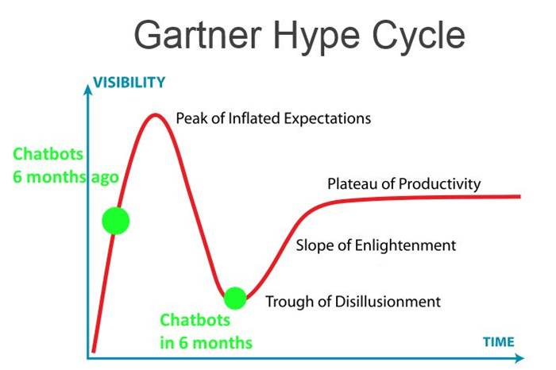
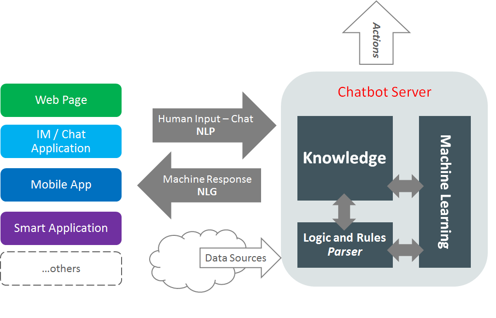
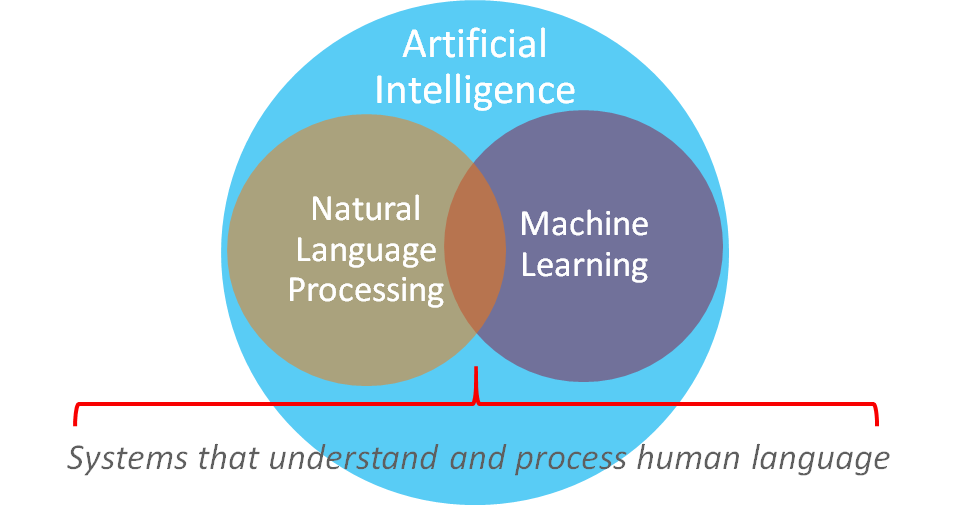
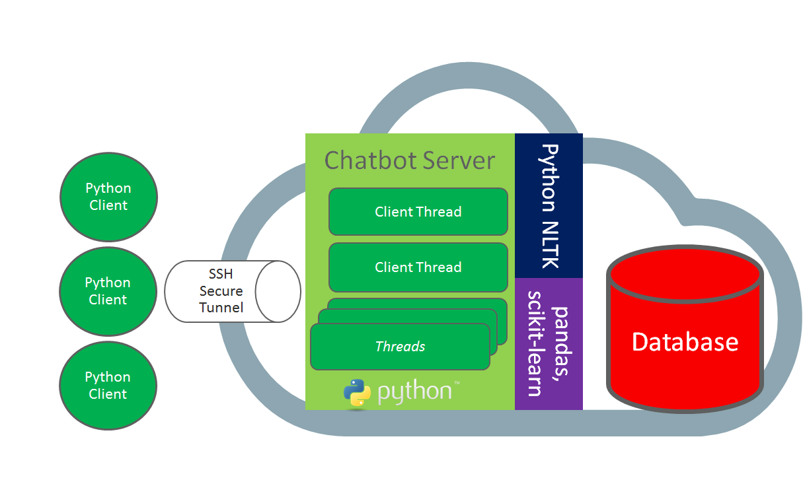
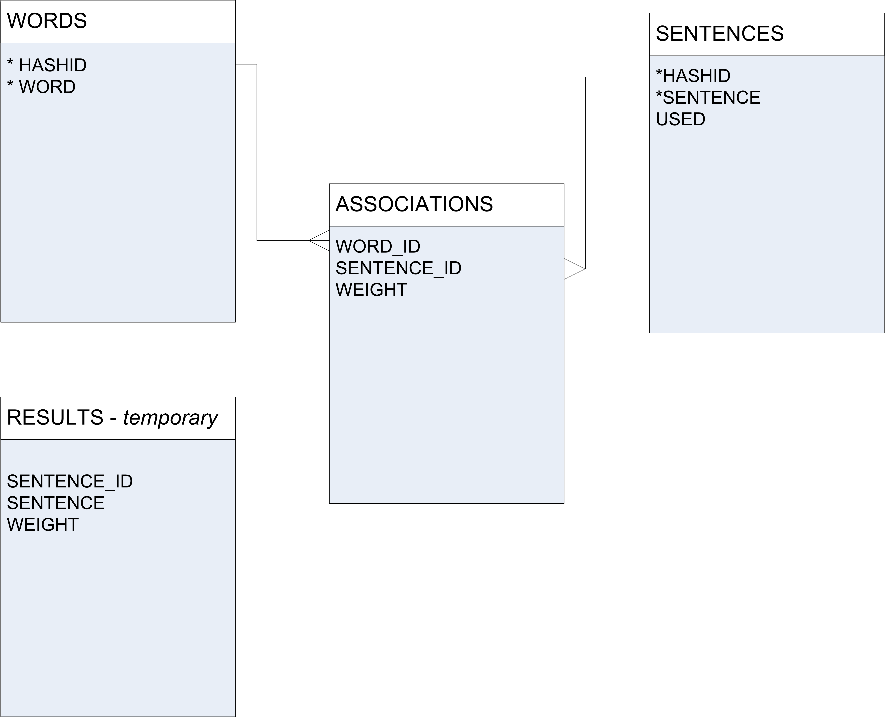
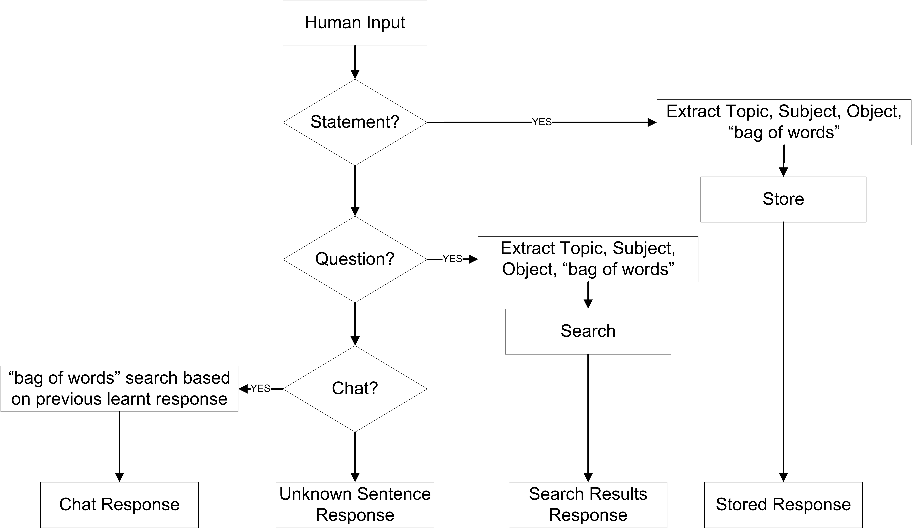
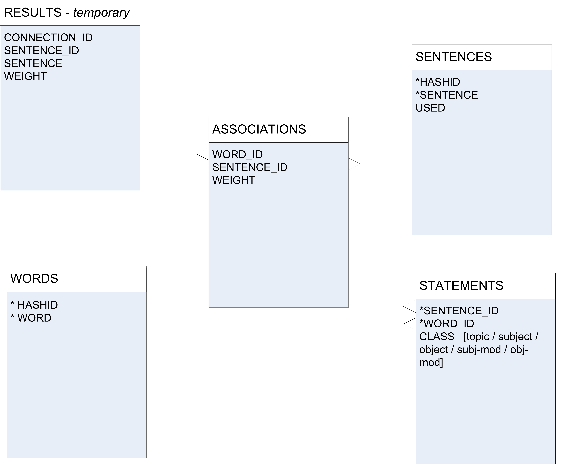

class: center, middle # Building a ChatBot with Python, NLTK and scikit-learn # <br> <br><br><br><br><br><br><br><br><br><br><br><br> London PyData 2017 - Ed Bullen, Oracle UK <br> <table> <tr> <td align="left"> https://www.linkedin.com/in/edbullen/</td> </tr> <tr> <td align="left"> @bullened </td> </tr> </table> --- ## About Me ## #### Work #### + Senior Consultant at Oracle (5 years) - Focus on tech solutions for large finance orgs #### Data Science + Studing the Coursera Data Science Specialisation for last 3 years - Completed 10 x 4 week modules, started the final Capstone this week - Participate in the London Meetup and Hackathon community #### Home Life #### + Married with two children - both children learning Python! + Keen Fencer (once competed for GB) --- ## Why ChatBots? ## <center></center> --- ## Tutorial Overview ## #### SimpleBot ##### + Working Example - Learn basic conversations by example + Use SimpleBot limitations as the background for NLP and ML motivation #### Python Notebooks #### 1. Introduction to NLTK - Explore a Corpus and Treebank 2. Tokenising Text and Parts-Of-Speech, 3. Grammer Structure and Dependency Trees 4. Classification of Sentences using Machine Learning #### NLP Bot #### + Introduce the concepts and capabilities listed above into a working example ### Setting Expectations ### "Broad not deep" - basic concepts and tools only --- ## Anatomy of a Chatbot ## <center></center> --- exclude: true ## Chatbot Capabilities ## <center></center> --- ## "SimpleBot" - A Basic Framework ## <center><img src="simplebot_architecture.png" width="700" /></center> https://github.com/edbullen/SimpleBot --- ## "NLPBot" - Enhanced Chatbot Framework ## #### <font color="red"> Multi-Threaded ChatBot Server - Python, MySQL, Oracle Cloud VM <font> #### https://github.com/edbullen/NLPBot <center></center> --- ## Part 1 - Trivial Example ## ###SimpleBot Demo### ** https://github.com/edbullen/SimpleBot ** - based on this blog-post: http://rodic.fr/blog/python-chatbot-1/ <center></center> --- ## "SimpleBot" Limitations and Missing Logic ## #### Word and Grammer Classification #### Meaning and type of the word is not considered in the flow: + What is the general topic? + We want to focus on the Subject and Object + For Example: - *Where is the cat going to?* - *Where is the car going to?* Or: - *The cat is dead* - *Is the cat dead* #### Sentence Classification #### The class of sentence affects flow - for instance: + Questions need answers (not another question) + Chat is just chat + Statements need to be filed away and noted (and the flow stops there) + Perhaps we need to recognise when we are getting feedback about previous sentence --- ## Natural Language Processing (NLP) ## ### Excerpts from Wikipedia ### + Interactions between computers and human (natural) languages + Fruitfully process large natural language corpora - Large samples of "real world" text, usually classified + Natural language understanding, natural language generation + Managing human-computer dialog systems --- ## Introducing the Python Natural Language Toolkit ## (...and a few others) + **Python NLTK** - http://www.nltk.org/ - Open Source package for Natural Language Processing - Written in Python - Originated at University of Pennsylvania (Steven Bird and Edward Loper) + **spaCy** - https://spacy.io - High performance Cython library for NLP + **Stanford CoreNLP** - https://stanfordnlp.github.io/CoreNLP/ - Written in Java with good interface to NLTK --- ## Part 2 - Natural Language Processing Notebooks ## #### GitHub Repo #### https://github.com/edbullen/nltk #### NoteBooks ##### 1. introduction to NLTK - Explore a Corpus and Treebank ``` corpora.ipynb ``` 2. Tokenising Text and Parts-Of-Speech ``` tokenisation.ipynb ``` 3. Grammer Structure and Dependency Trees ``` grammar.ipynb ``` --- ## Part 3 - Machine Learning and Classification ## ### Sentence Classification ### Identifying **Dialogue Act Types**, for example: Question / Statement / Chat ? <center><img style="float: center;" src="supervised-classification.png" width="600" /></center> http://www.nltk.org/book/ch06.html - i.e. example with `nltk.corpus.nps_chat.xml_posts()` --- ## Part 3 - Machine Learning and Classification ## #### NoteBooks in GitHub Repo #### https://github.com/edbullen/nltk ``` classification.ipynb ``` --- ## Part 4 - Putting it all Together ## <center></center> --- ## Part 4 - Putting it all Together ## <center></center> --- ## Part 4 - Putting it all Together ## #### NLPBot #### https://github.com/edbullen/NLPBot ``` >>> The latest Python source distribution is always available from python.org at https://www.python.org/downloads/ Bot> Shall I store that as a fact for future reference? ("yes" to store) >>> yes Bot> Thanks, I've made a note of that. >>> There is a Python newsgroup comp.lang.python and a mailing list: python-list . Bot> Shall I store that as a fact for future reference? ("yes" to store) >>> yes OK, I've stored that information. >>> Where can I get the latest Python source code from? Sorry, I can't find an answer to that. >>> Where is the latest Python source distribution? The latest Python source distribution is always available from python.org at https://www.python.org/downloads/ >>> Thanks. Bot> How are you? >>> I am fine thanks Bot> How are you? >>> Good Bot> Please train me - enter a response for me to learn (or "skip" to skip)' >>> skip Bot> OK, moving on... >>> Is there a Python newsgroup or mailing list? Bot> There is a Python newsgroup comp.lang.python and a mailing list: python-list. ``` --- class: center, middle # Thank You # <br> <br><br><br><br><br><br><br><br> <table> <tr> <td align="left"> https://www.linkedin.com/in/edbullen/</td> </tr> <tr> <td align="left"> @bullened </td> </tr> </table>